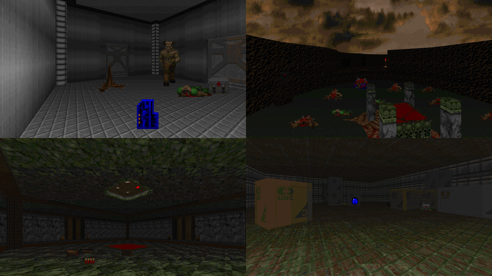

| Year | 2014 |
| IWAD | Doom II |
| Source port | ZDoom |
| Game mode(s) | Single-player |
| Map(s) | MAP01-32 |
Prayers of Armageddon: Retaliation is a full recreation of Prayers of Armageddon. This wad features 32 brand-new levels, some based loosely on their 2010 counterparts but mostly completely reimagined.
The scale of the levels hasn’t increased much, but detail is a lot more prominent and the layouts are overall less linear. I also put some more thought into the gameplay aspect: a few of the levels here include traps and puzzles.